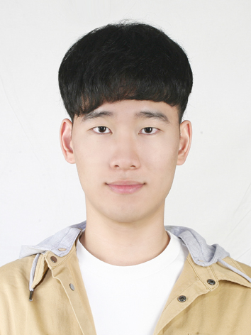

개인정보
- 이름 : 양승준
- 생년월일 : 1999.09.08 (만 24세)
- 학번 : 201923152
- H.P. : 010-4249-2031
- E-mail : ysj0908@pusan.ac.kr
- 주소 : 부산광역시 금정구 수림로61번길 57
학력사항
- 2015~2017 대연고등학교
- 2019~ 부산대학교 재료공학부 전공
자격증
- 한국한자실력평가원 한문 1급
- 컴퓨터활용능력 1급
- 한국사검정능력 1급
- 일반기계기사
- 공조냉동기계기사
- NCS 기계설계산업기사
- 자동차운전면허증 2종보통
연구경력
- 2022 일동케미칼&탑나노&부산대학교
Polyurethane-based stretchable display with 50% elongation recovery 공동연구
- 2022 리셋컴퍼니&부산대학교
Solar waste panel integrated pre-processing automation and laser-based oil resource recovery 공동연구
사용가능언어
- Matlab
- Python
- HTML/CSS/JavaScript